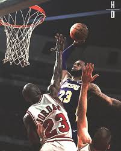
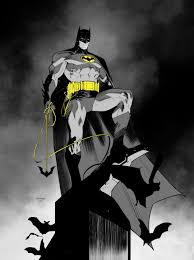

THE Lebron James
 MJ"> LeBron James isn’t just better than MJ—he’s the evolution of greatness. He’s bigger, faster, and more versatile. LeBron can guard all five positions, run the offense like a point guard, and dominate the paint like a center. He’s the all-time leading scorer and top five in assists, which is wild when you realize MJ wasn’t even close in those categories. LeBron’s been to the Finals ten times, with different teams, in different eras, and is still performing at an elite level in his 20s-plus season. Meanwhile, MJ took breaks and had a shorter prime. And let’s not even talk about the off-court impact—LeBron built a school, empowered communities, and stayed out of controversy in a social media era where every move is under a microscope. 👑